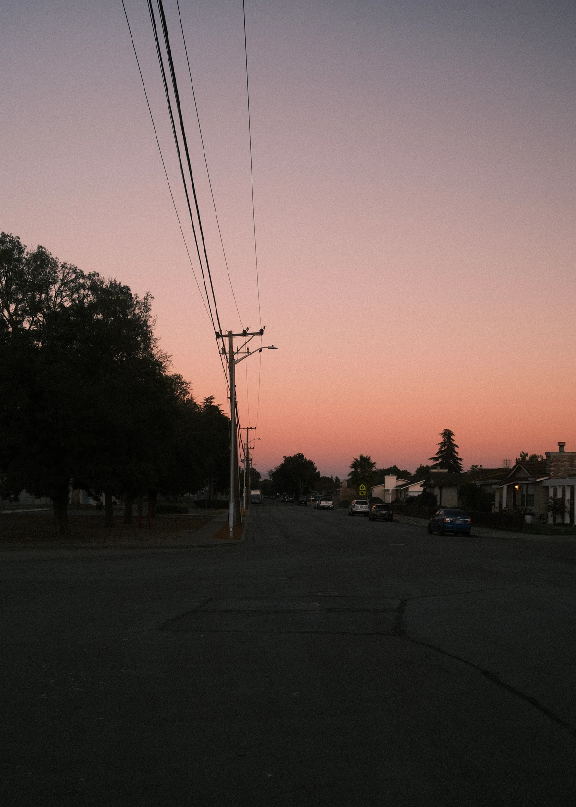
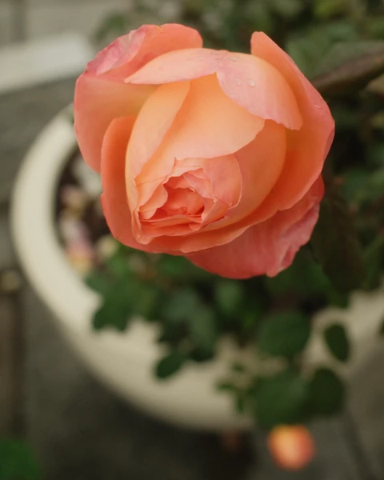
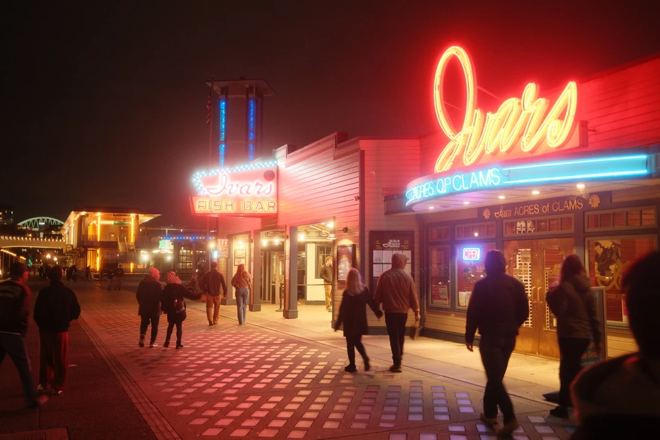
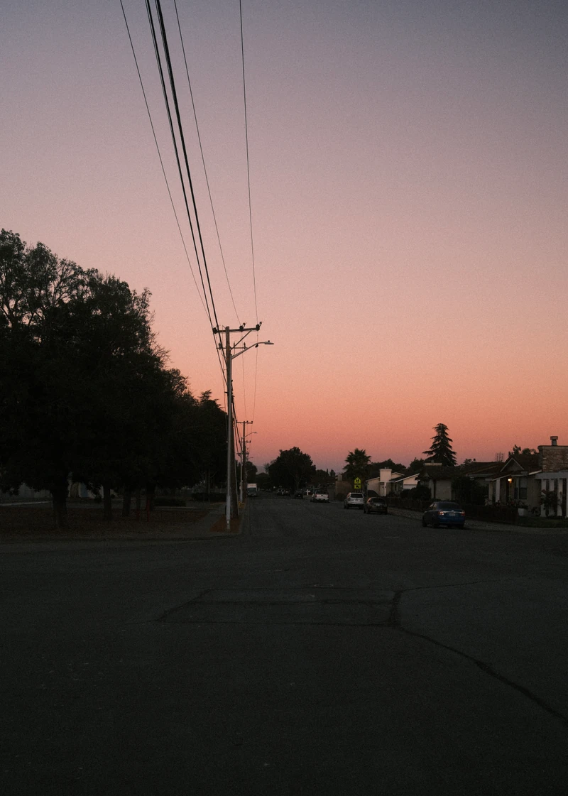
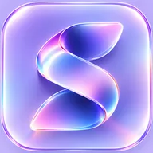
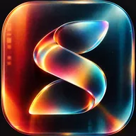
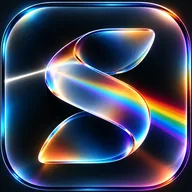
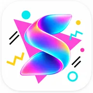

The everyday edit
Cleaning up last weekend’s photos?
Pick a date in Browse. Favorite the keepers and sort them into albums in Organize.
Find your starting point


Photo organizing. For Apple Photos.
Review, favorite and organize your camera roll, right in the Apple Photos library you already have.
Free to start. No ads. No SortGlass account.
iPhone · iPad · MacInside SortGlass
Try sorting a few sample photos below. Pick your Favorites, add them to albums, or add unwanted shots to Trash.
That’s every sample photo.
ALL· 12 / 248
Jun 30, 2016 at 8:25 PMUp arrow queues the photo for Trash, down arrow makes it a Favorite, left and right arrows move between photos. The buttons do the same.
Review Trash and confirm before anything is deleted.
Keep your albums and folders close. Add a photo with a tap, or use star ratings to mark your strongest shots.
Ratings require Pro and supported system software.
Search by camera, file type or date. Combine and save custom filters with Pro for the sets you return to often.
Camera and lens results depend on the metadata in each file.
The methodology
Favorite and organize in SortGlass, and your changes appear seamlessly in Apple’s Photos app. Both use the same library, so there’s no export, second library, or separate sync step.
The Photos app built into your iPhone, iPad and Mac.
Trash is a queue until you confirm deletion. Ratings require SortGlass Pro and iOS 27 or iPadOS 27 or later on iPhone and iPad. Updates on other devices depend on your iCloud Photos settings and connection.
Appearance
Choose a background, an accent and a heart color. Keep it flat, make it vibrant, or save a combination that feels like you. Your photos. Your SortGlass.
A few combinations to try
Free includes SortGlass Blue on the System background. SortGlass Pro unlocks every background, accent color, heart color and app icon, plus launch styles. Apple’s Liquid Glass design appears on supported systems, including iOS 26 or later and iPadOS 26 or later.




Pearl White and Opal are free; SortGlass Pro unlocks the rest.
Apple devices
Quick sessions on iPhone. A bigger canvas on iPad. Familiar keyboard and pointer controls on your Mac.
Fast, one-handed sessions. A few minutes can make a difference.
Portrait, landscape and flexible windows. Make space for your photos.
The Designed for iPad app, with keyboard shortcuts and pointer selection.
Bring your setup with you. Optional private iCloud sync carries supported settings, pinned albums and search metadata between your devices. You choose what to sync. Photos themselves stay in Apple Photos.
Pricing
Prices shown in USD for the US App Store. Prices and offers may vary by region; confirm the current price in SortGlass before purchasing. One free trial per Apple Account across Pro subscriptions. Subscriptions renew automatically, including after a trial, unless canceled at least 24 hours before the period ends. Manage or cancel in your Apple Account settings. Buying Lifetime doesn’t cancel an existing subscription. Optional tips support development and don’t unlock Pro.
Privacy
SortGlass organizes your library on your device. There’s no SortGlass account to create, and no ads.
Questions
Only when you confirm. Swiping up adds a photo to SortGlass Trash, which is just a queue. When you choose Delete in Trash, your device asks you to confirm, and confirmed items move to Recently Deleted in Apple Photos, where Apple generally keeps them for up to 30 days unless you delete them sooner.
Yes. SortGlass works directly on your Apple Photos library, so favorites, albums, ratings on supported systems, and confirmed deletions sync through iCloud Photos according to your settings. Photos stored only in iCloud may download when you open them.
An iPhone with iOS 18 or later, an iPad with iPadOS 18 or later, or an Apple-silicon Mac (M1 or later) with macOS 15 or later. Star ratings require SortGlass Pro and supported system software; on iPhone and iPad, that means iOS 27 or iPadOS 27 or later. Liquid Glass appears on supported systems, including iOS 26 or later and iPadOS 26 or later.
Search uses an index of the metadata SortGlass can read. Camera and lens details aren’t present in every file, and some iCloud-only originals need a download before their details can be checked. More → Photo Search Index shows progress and scan options. A completed scan doesn’t guarantee every file contains camera information.
On iPhone or iPad, manage subscriptions in Settings → your name → Subscriptions. On Mac, open your account in the App Store and choose Subscriptions. See Apple’s cancellation instructions. To restore Pro on another device, open More → SortGlass Pro → Restore Purchases while signed in with the same Apple Account.
Open your library. Start with a few.